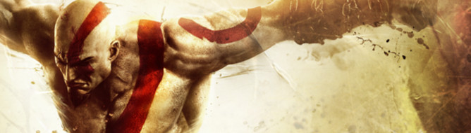

Dale al play para mejorar tu experiencia con la banda sonora de fondo 🪓:)
God of War es una franquicia de videojuegos hack and slash creada por SCE Santa Monica Studio y distribuida por Sony Computer Entertainment Se basa en las aventuras de un semidiós espartano, Kratos, quien se enfrenta a diversos personajes de la mitología griega y nórdica tanto héroes (Heracles, Teseo, Perseo, etc.); especies mitológicas (gorgonas, arpías, o minotauros); dioses griegos (Ares, Poseidón, Zeus, entre otros), titanes (como Cronos) y dioses primordiales (como Gaia) Aunque el guerrero espartano acostumbra enemistad con la mayoría de los dioses, recibe ayuda de muchos de ellos en algún momento de cada entrega, en especial de Atenea.